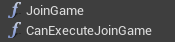

First steps with NoesisGUI and Unreal
This document will guide you through the process of setting up the NoesisGUI Unreal Engine plugin. Noesis entirely replaces Unreal UI offering a much more convenient and efficient approach. You will learn how to start editing the samples included in NoesisGUI plugin and how to create new games from scratch. NoesisGUI is deeply integrated with Unreal; XAMLs appear as native resources that directly use assets imported by Unreal like Textures, FontFaces and Sounds. It is strongly recommended that you read the rest of tutorials to familiarize yourself with the basic concepts of XAML and Noesis architecture. Some knowledge of Unreal Engine is also assumed, but this document attempts to be as thorough as possible.

Installation
You can download the latest version of the plugin directly from our website. The zip file contains an Unreal project with some samples and the plugin ready to be used.
NoesisGUI works with versions of Unreal Engine installed through the Epic Games Launcher as well as those built by yourself from the source code in GitHub. And it can be installed as either an Engine Plugin or a Game Plugin.
Engine Plugin
If you want to use it as an Engine plugin please extract the contents of Plugins/NoesisGUI folder from the downloaded file into [UE4Root]/Engine/Plugins/NoesisGUI. [UE4Root] is the directory where you installed the engine from the Epic Games Launcher, or the directory where you cloned the UnrealEngine GitHub repository.
Game Plugin
If you want to use it as a Game plugin, so other game projects don't use it, please extract the contents of Plugins/NoesisGUI folder into [ProjectRoot]/Plugins/NoesisGUI, being [ProjectRoot] the directory where you have your .uproject file.
Examples
Within the zip file we provide a project with a few working samples. You can find a map asset for each one in the 'Content' folder root. We also provide Microsoft Blend projects for each sample inside 'Assets' folder.
Along with the samples you will find a Theme folder (xaml and font sources inside Assets folder) which defines default styles for all UI controls and are a good start to create your own game styles.
A lot more examples can be found at our GitHub repository.
Configuring NoesisGUI
At this point the plugin should be ready to use, so we can proceed to enable it and configure some settings for your project.
Run the Unreal Engine editor. You may get an alert on the bottom right corner alerting you that new plugins have been installed. If you don't, open the Plugins dialog from the Edit menu, and select UI from the category list on the left. You can enable the plugin from the right hand panel.
You can also do this manually by modifying your Project's .uproject file to add the plugin dependency, like this:
"Plugins": [
{
"Name": "NoesisGUI",
"Enabled": true
}
]
With the plugin enabled, you can configure some NoesisGUI global settings for your project. You can find them by opening the NoesisGUI top menu and selecting Settings. These settings have sensible default values, so if you're unsure about them you can just leave them as they are. Modifying some of these settings will require you to restart the editor for the changes to take effect.
Project Setup
The process to set up you project to work with NoesisGUI depends on whether it is a Blueprint-only project or a C++ project.
For a Blueprint-only project, enabling the plugin as described above is all you need to do.
For a C++ project, there are two additional steps. First, you must add the module dependencies to your project. To do that, simply add the following line to you module's ModuleRules derived class (in your module's .Build.cs file):
PrivateDependencyModuleNames.AddRange(new string[] { "Noesis", "NoesisRuntime" });
Next, you have to #include the necessary headers for your project. To simplify this we've created a single header file you can include, preferably in your game project's PCH file. Just add the following line:
#include "NoesisRuntime.h"
NoesisGUI Integration
With the NoesisGUI plugin for Unreal Engine you have all the power of the native NoesisGUI SDK at your disposal. There are a few particularities about the use that will be explained later, but the bottom line is that everything that can be done with the native SDK will work in Unreal Engine.
But we wanted to provide an easy way to allow users to leverage the power of NoesisGUI using Unreal Engine's Blueprints. A mechanism is provided that allows Bindings to Blueprint properties, without having to write a signle line of C++ code.
With this approach NoesisGUI will be more accesible for everyone, but at the same time will allow more advanced users to use the native SDK directly, with the complete set of features available to them as in any other platform.
Assets
At this point you're ready to start using NoesisGUI in your project. The first step is importing your assets. These will consist of XAML files, fonts and images. The easiest way to work with NoesisGUI assets in Unreal Engine is to put them in your game's Content folder. They will be automatically imported into Unreal Engine, and any modifications you make will be automatically re-imported. After import, your XAML files will appear in Unreal Engine's Content Browser as NoesisXaml assets, while your images will appear as Texture2Ds and fonts will appear as FontFaces.
Absolute URIs
When importing your XAML files, these may contain references to other XAML files, as well as images and fonts, as stated above. These references may be in the form of relative or absolut URIs. When working with absolute URIs in Unreal Engine, by default these are considered as relative to the Content folder of your game project.
Alternatively, the plugin relies on Unreal Engine's Auto Reimport feature to map source asset directories to folders in the Content Browser. If you want to keep your XAML project separate from your game's assets, add a new entry to the Auto Reimport settings. You can find them by opening the Editor Preferences dialog from the Edit menu, then scrolling down to the General section on the left panel, and finally Loading & Saving. The settings are in the Auto Reimport category, hidden by default on the extended options.
Within each mapped folder, absolute URIs will be placed directly in the mount point folder in the Content Browser.
Note
Our samples use this approach to keep Blend project and source files separated from unreal assets in Content folder.
If files outside of these folders (Autor Reimport folders and the game's Content folder) are referenced as dependencies, the Content folder will be considered its root, and the assets will be placed in folders starting with __, which is the result of making the source paths relative to the Content folder.
Please refer to the document URIs in NoesisGUI for more information.
Views
Now that you have your assets imported into the game, you have to create a View for it. The easiest way is by right-clicking on any xaml asset and select Add to Viewport. This will create and configure a View automatically, and add it to current Level map so you can rapidly see the UI rendered in the viewport when playing.
A NoesisView is also an Unreal Engine UMG Widget. This means that you can use it wherever a native UMG Widget is used, so if you're familiar with Unreal Engine's UMG system it will be very simple to get up and running with NoesisGUI. Please, refer to the document Creating Widgets for information about how to manually add a NoesisView to your viewport and how to handle input. Because a NoesisView is also an UMG Widget it means you can also create 3D UI elements by using a Widget Component. Please, refer to the document Widget Components for more information.
Double-clicking the View asset will open the familiar Blueprint Class editor. Press the Class Settings button on the top toolbar to edit the View properties.
The most important of all is the XAML property. Here you'll reference the NoesisXaml for which you want to create the View. Enable PPAA allows you to enable per-primitive antialiasing, in case you're not using multisampling on your main render target. Tessellation Quality lets you select the degree of subdivision for your path geometry. Remember to compile and save your NoesisView before using it.
The following Level Blueprint will render the View in the screen.
Property Binding
One of the most powerful features of NoesisGUI is the support for a Model-View-ViewModel pattern through Data Binding. This is made even more powerful in Unreal Engine by combining it with the graphical scripting capabilities provided by Blueprints.
When you create a NoesisView for a NoesisXaml and you create a Widget from it, the instantiated object itself is set as the Data Context. You can also override this behaviour by calling the function Set Data Context on the NoesisView itself and specifying a different Unreal Engine Object.
Whether you decide to use the NoesisView or any other Object as the Data Context, you can define in properties that can be bound to your XAML, as described in the aforementioned document. You can define a property in two ways:
- As a variable. The name of the property for binding purposes will be the name of the variable.
- As a Get function that has no input parameters and a single output parameter, with alternatively a Set function with no output parameters and a single input parameter of the same type as the output parameter of the Get function. The name of the property for binding purposes will be the name of the function without the Get/Set prefix.

Here's a table with the types supported for Data Binding and the corresponding native NoesisGUI SDK types. Whenever there was a native Unreal Engine type that could work we've decided to use that instead of creating a new type.
Unreal Engine Type NoesisGUI Type Boolean bool Integer int32_t Float float String NsString Text NsString Color Noesis::Color Vector2D Noesis::Point Box2D Noesis::Rect NoesisSize Noesis::Size NoesisThickness Noesis::Thickness NoesisCornerRadius Noesis::CornerRadius Timespan Noesis::TimeSpan NoesisDuration Noesis::Duration NoesisKeyTime Noesis::KeyTime Texture2D Noesis::ImageSource TextureRenderTarget2D Noesis::ImageSource
The plugin also supports custom Blueprint Enums, Structures and Classes. Blueprint Structures and Classes work similarly and they both expose their members as sub-properties. The difference is that Structures are treated as atomic objects, and the performance characteristics are different. We recommend you use Blueprint Classes for long lived objects, and Blueprint Structures for small objects with shorter lifespans that don't require a full Blueprint Class.
We also support Arrays of the aforementioned types, which are exposed as a List to the Binding system.
Additionally we support binding of Blueprint functions to NoesisGUI Commands. A function that either takes no parameters, or takes a parameter of a compatible Unreal Engine type from the table above, and has no output function will be turned into a functor implementing the Noesis::ICommand interface. If you also add a function with the same name but prefixed with CanExecute that takes either no parameters, or a parameter of the same type as the matching Command function, and returns a Boolean, it will be used to decide whether the command can be executed.
Property change notifications
Performance is a key concern of NoesisGUI. For this reason, instead of polling all the data sources for all bound properties in every update, it uses a reactive model in which the user notifies NoesisGUI that a property has changed and the system updates the minimum possible set of its internal structures affected by that change.
In the NoesisGUI Native SDK this is achieved by having your classes implement the Noesis::INotifyPropertyChanged or Noesis::INotifyCollectionChanged interfaces. The typical implementation exposes Set functions that compare the new value with the old and notify any potential listeners if they are different.
To simplify this in Unreal Engine, we've provided custom nodes that you can use in your Blueprint code that replace the standard Set Property and array operations with custom versions that, additionally notify listeners if necessary. Here's a table with the native Unreal Engine nodes and the corresponding NoesisGUI ones:
Unreal Engine Node NoesisGUI Node Set Set w/ NotifyChanged Add (Array) Add w/ NotifyArrayChanged Add Unique (Array) Add Unique w/ NotifyArrayChanged Shuffle (Array) Shuffle w/ NotifyArrayChanged Append Array (Array) Append Array w/ NotifyArrayChanged Insert (Array) Insert w/ NotifyArrayChanged Remove Index (Array) Remove Index w/ NotifyArrayChanged Remove Item (Array) Remove Item w/ NotifyArrayChanged Clear (Array) Clear w/ NotifyArrayChanged Resize (Array) Resize w/ NotifyArrayChanged Set Array Elem (Array) Set Array Elem w/ NotifyArrayChanged
Using this function is the most convenient way to notify NoesisGUI of changes in your data. But sometimes it is necessary to manually notify that a property has changed. This is the case, for example, when a property is implemented as a pair of Get/Set functions, that are not bound to a variable and therefore don't allow you to use these nodes. For these situations you can manually call the functions NotifyChanged and NotifyArrayChanged, passing the name of the property.
Performance stats
NoesisGUI main tasks are profiled using Unreal stats system.
The following command shows information about the time spent processing input events, updating the views, and generating the render commands. It also shows the total memory allocated through Noesis:
stat Noesis
Inside Unreal's GPU category you can find the time spent rendering Noesis UI:
stat GPU
Logging and debugging
If following the previous steps you still can't see your NoesisGUI interface, the first step would be to take a look at the Output Log window. You can select the verbosity of the output from the plugin settings, as described above. The default setting is Quiet, and won't output anything. Normal will allow you to discover common errors, and Binding also provides extra information about the Binding system which is separated form the rest as it can be quite detailed.
Additionally logging messages in NoesisGUI have several levels of verbosity. Here is a table with the levels defined by NoesisGUI and how they map to Unreal Engine:
NoesisGUI Verbosity Level Unreal Engine Verbosity Trace VeryVerbose Debug Verbose Info Log Warning Warning Error Error
You can filter the NoesisGUI log messages by selecting the LogNoesis category from the Categories drop down list.